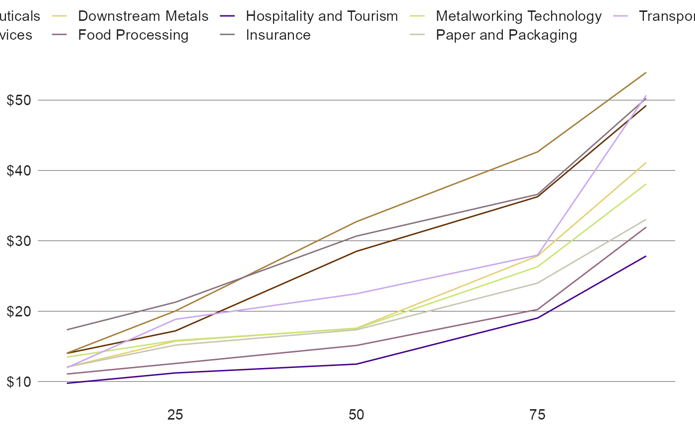
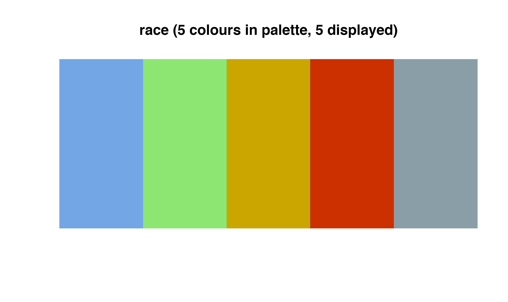
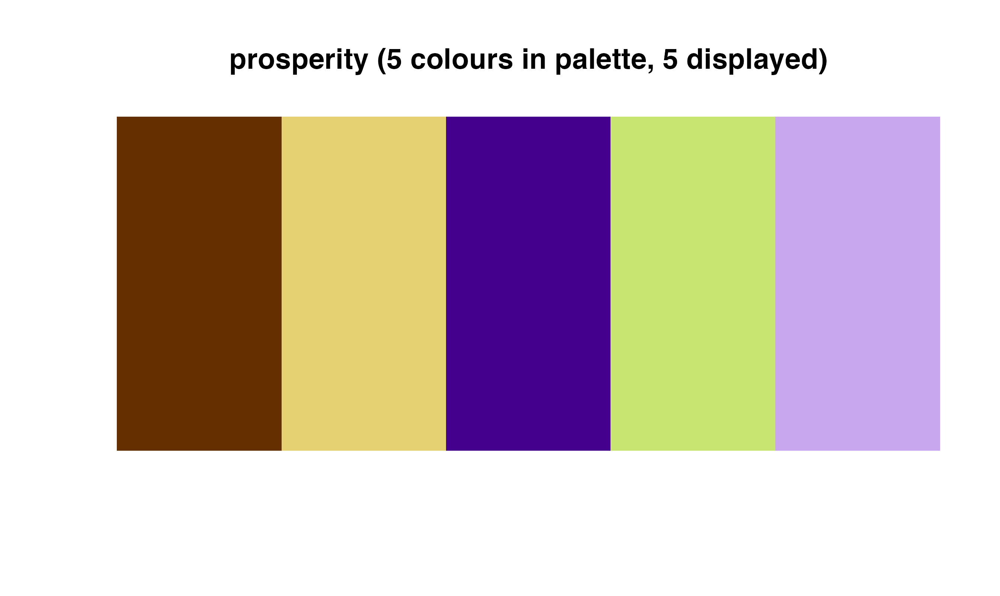
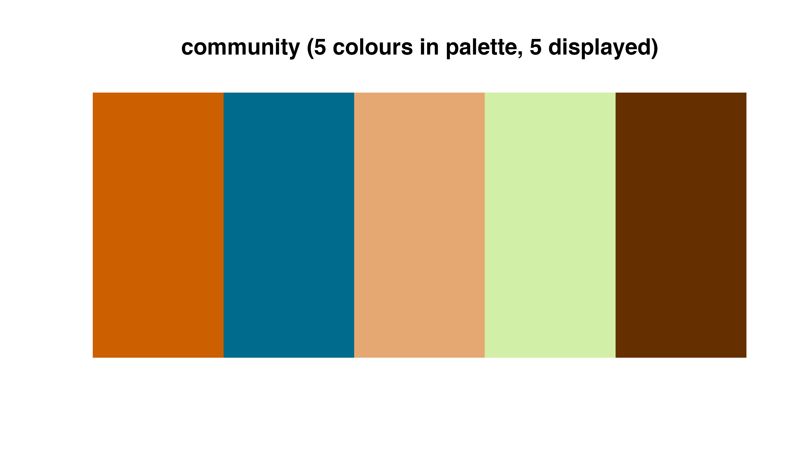
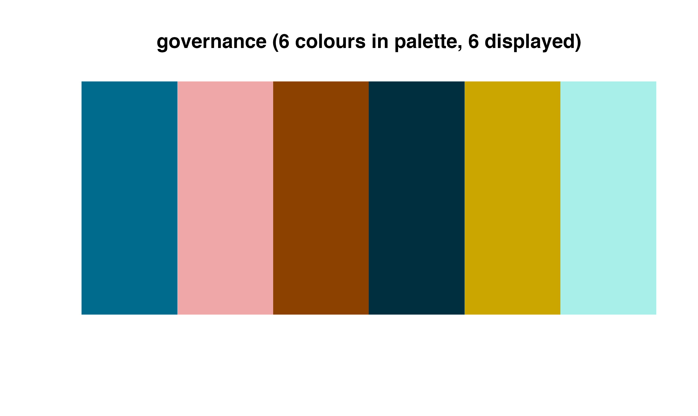
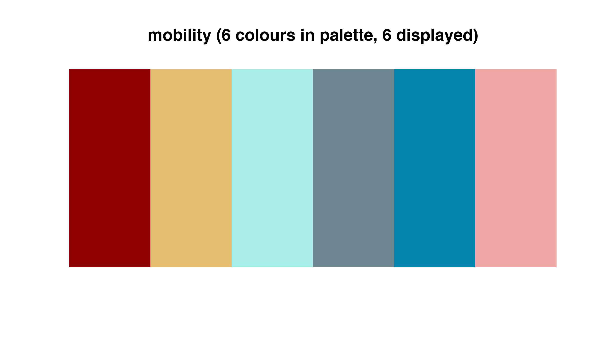
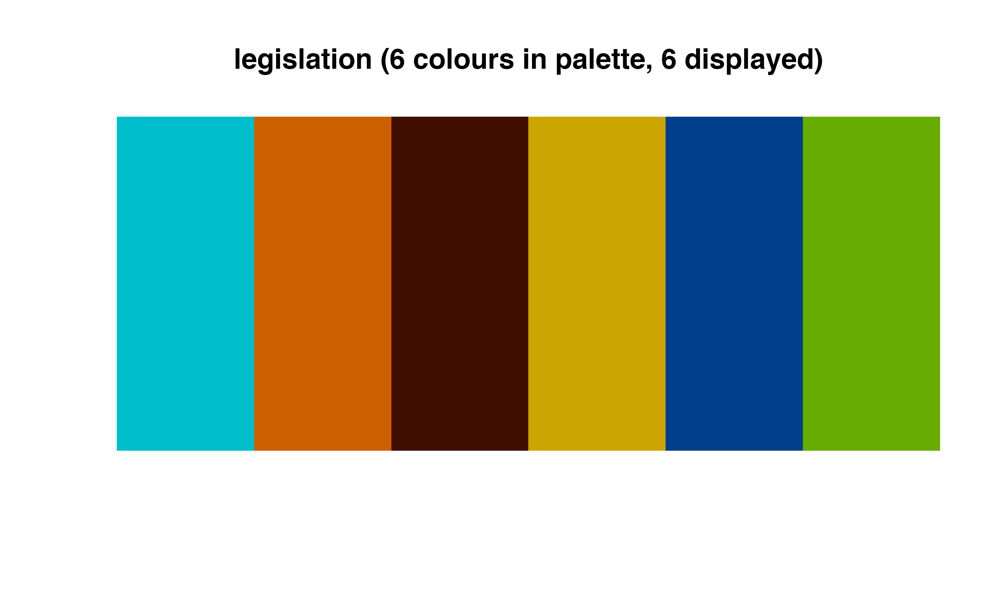
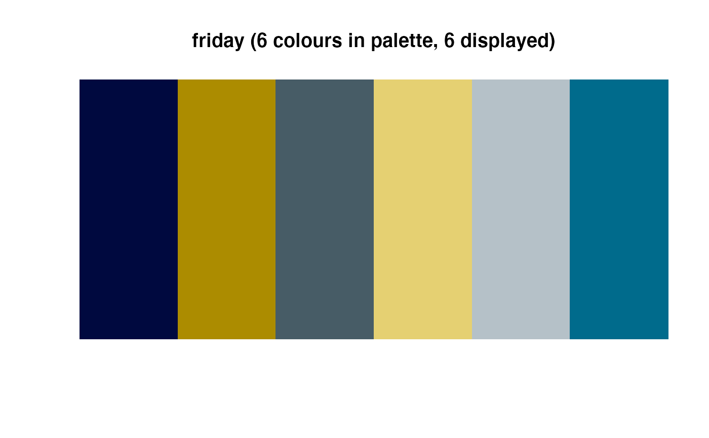
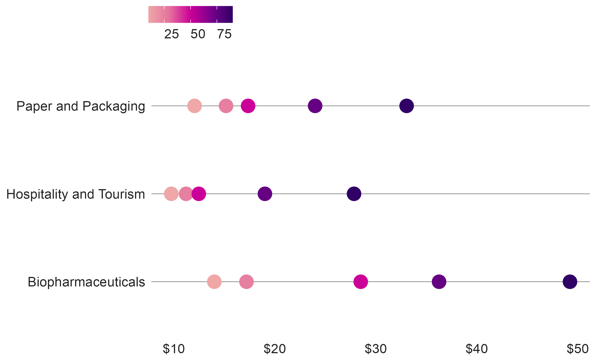

Palettes based on the CMAP color palette can be applied directly to ggplot graphics. The package contains both discrete and continuous color palettes. Each type of palette can be applied to either the color or fill attributes of a ggplot.
Add discrete palettes by adding either a cmap_fill_discrete or cmap_color_discrete object to a ggplot. Note that discrete palettes will automatically interpolate additional colors if the dataset has more colors than the palette. This can be helpful but is not ideal for finished graphics.
ggplot(percentile_wages, aes(x = percentile, y = wage, color = cluster)) + geom_line() + scale_y_continuous(labels = scales::dollar) + theme_cmap() + cmap_color_discrete(palette = "prosperity") #> 'Whitney' font family not found. Using a substitute...

The following gradients are available:

Add continuous palettes by adding either a cmap_fill_continuous or cmap_color_continuous object to a ggplot. For example:
percentile_wages %>% filter(cluster %in% c("Biopharmaceuticals", "Hospitality and Tourism", "Paper and Packaging")) %>% ggplot(aes(x = cluster, y = wage, color = percentile)) + geom_point(size = 5) + scale_y_continuous(labels = scales::dollar) + coord_flip() + theme_cmap() + cmap_color_continuous(palette = "seq_red_purple") #> 'Whitney' font family not found. Using a substitute...
